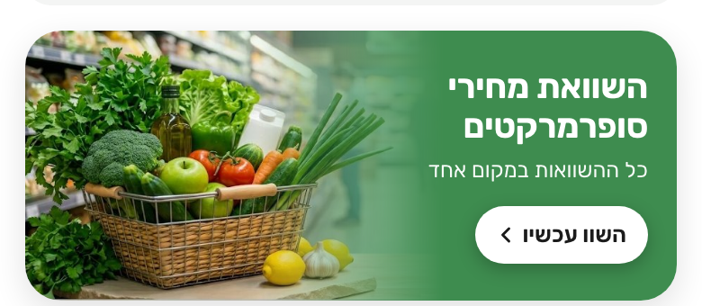
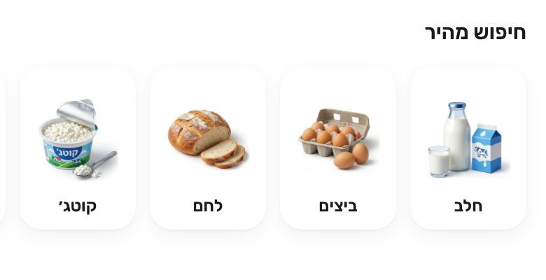
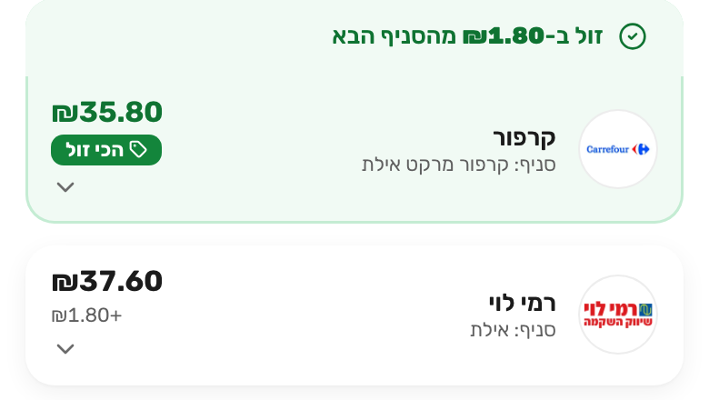
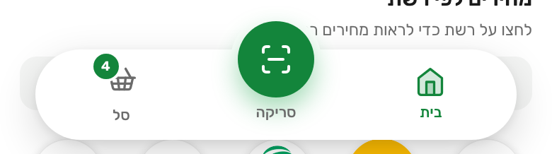

How every screen should look: colours, type, the main pieces, and the rules that keep it consistent.

Banner bright photo, calm green panel, white button
Quick search square product photos
Store row round logo, cheapest on pale green
Bottom bar floating capsule, raised scan buttonTaken from the live site’s style file.
| Element | Rule |
|---|---|
| Type | Rubik, small and quiet: 11 to 14 px does most of the work; text fields are 16 px so phones never zoom. Right to left. Prices always ₪ with two digits. |
| Cards and spacing | White, no outline, soft shadow, corners 10 to 20 px, spacing in steps of 4 px. Touch targets at least 44 px; the notch and home indicator are respected. |
| Header and bottom bar | A flat white header (logo, city chip, basket pill, a search icon once the page’s search box scrolls away). A floating white capsule with Home, a raised green Scan circle, and Basket. |
| Banner and quick search | Three slides (compare, scan, deals) with a bright photo, a calm green panel, white text and button. Ten square product photos for quick search. |
| Product and deal cards | A big photo, name, “cheapest at” with the chain’s round logo, price per 100 g or litre when useful, a green add button. Deal cards add a saving pill (for example -40%). |
| Store row | The same on the product and basket pages: round logo, branch, price, gap from cheapest; the cheapest on pale green with a tag; promotion line and “old price” warning. |
| Feel | Items fly to the basket icon, loading is a calm shimmer, pages fade in. Keyboard focus rings and labels on every icon button. |
| Part | Intention |
|---|---|
| Pins | A rounded label with the basket total; the cheapest is pale green with the tag; stores missing items are grey. Clusters when zoomed out. |
| Phone layout | The map fills the screen and the store list is a sheet sliding up, with a clear Map / List toggle. Stores without a position are listed under the map. |